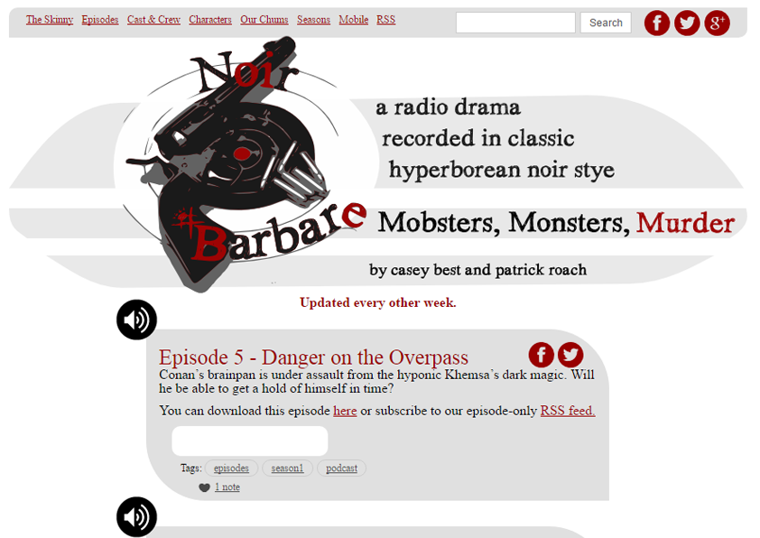

Noir Barbare
Noir Barbare is a podcast that follows a noir retelling of Robert Howard's Conan the Barbarian. It is set as an old time radio drama. I co-authored the script, recorded dialogue, created the logo, all design elements, and a custom Tumblr template for the site.
- Sound Recording
- Graphic Design
- LESS
- CSS
- HTML